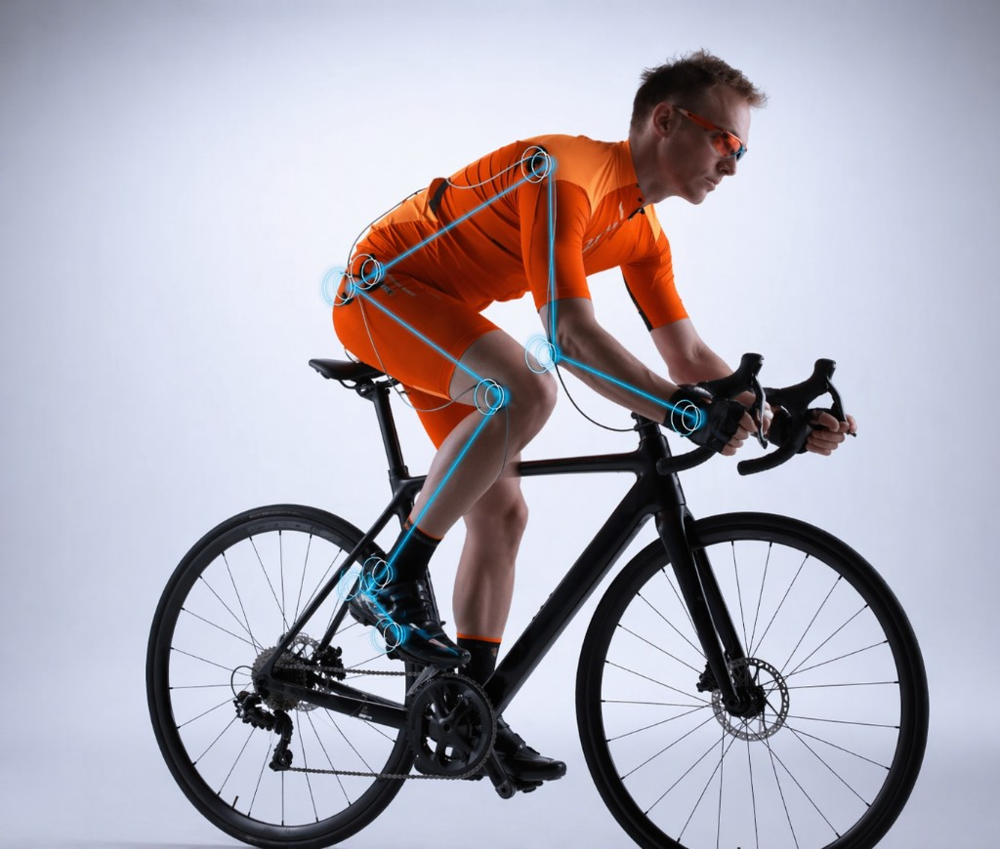
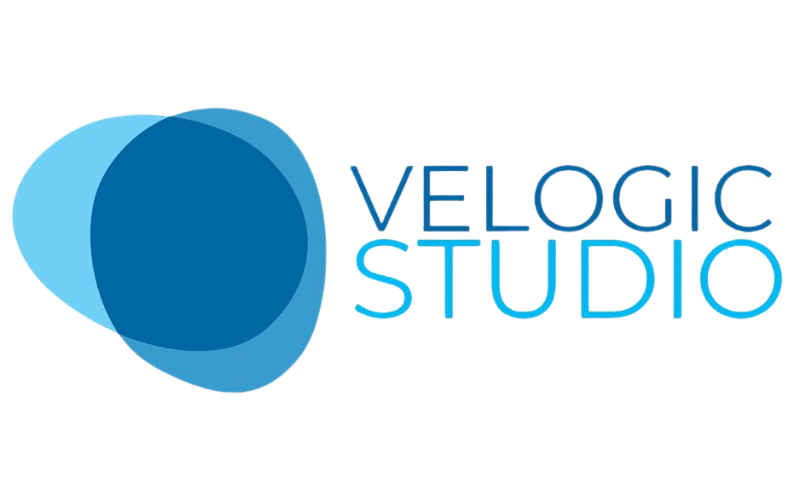
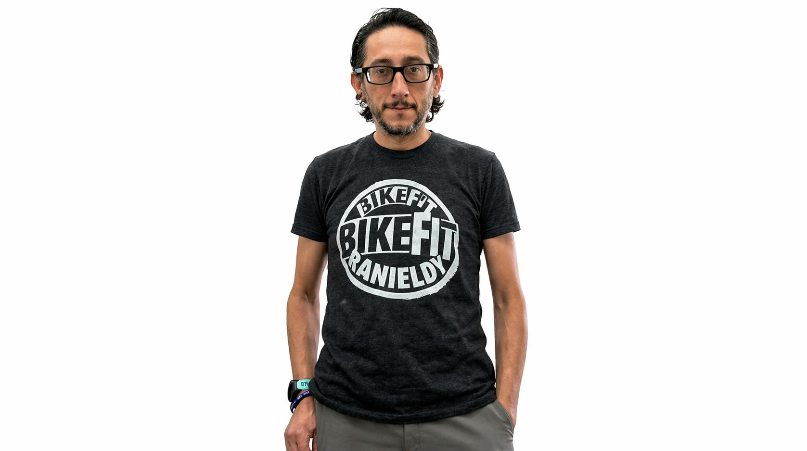

Pedale com mais conforto,
menos dor e muito mais performance.
O Bike Fit certo transforma sua experiência na bicicleta. Com tecnologia de ponta e formação EBBT, Ranieldy Mendes ajusta sua bike ao seu corpo — para você pedalar do jeito que sempre quis, em Brasília.
Atendimento presencial em Brasília · Todos os níveis de ciclista · Do iniciante ao profissional
Você se identifica com
alguma dessas situações?
Dor no joelho, lombar ou pescoço depois de pedalar
Sensação de que a bike nunca está no ponto certo
Performance estagnada mesmo treinando bastante
Desconforto no selim que simplesmente não passa
Acabou de comprar uma bike nova e quer começar do jeito certo
Quer pedalar mais longe sem sofrer no dia seguinte
Se você se identificou com pelo menos uma dessas situações, o Bike Fit foi feito pra você. E a boa notícia: em uma única sessão, a gente resolve isso.
Quero resolver isso agoraBikeFit
Profissional
BikeFit é a análise e ajuste biomecânico da posição do ciclista na bicicleta. Uma posição correta elimina dores, aumenta a performance e transforma completamente sua experiência no pedal.
Prevenção de Lesões
Elimine dores no joelho, lombar, pescoço e quadril causadas por posição inadequada.
Performance
Maximize a transferência de força para o pedal com a posição biomecânica ideal para seu corpo.
Conforto
Pedale por horas sem desconforto — seja no cotidiano urbano ou em longas distâncias.

por sessão
O Bike Fit é pra você —
seja qual for o seu nível
Iniciante, ciclista regular, atleta ou triatleta — se você pedala, o Bike Fit tem algo pra te oferecer.
Ciclista Amador
Dor no joelho, costas ou pescoço
Você pedala por prazer e saúde, mas as dores estão te impedindo. O BikeFit identifica e corrige a origem do problema.
Atleta Profissional
Perda de performance
Cada watt conta. Ajustamos sua posição para máxima eficiência aerodinâmica e transferência de força.
Triatleta
Eficiência nas três modalidades
No triathlon a posição no ciclismo precisa preservar os músculos para a corrida. Ajustamos com esse equilíbrio em mente.
Ciclista Urbano
Desconforto no cotidiano
Use a bike no dia a dia sem dores. Um ajuste correto torna o pedal urbano mais seguro, eficiente e confortável.
O que acontece na
sua sessão de Bike Fit
Da chegada ao relatório final — um processo completo, técnico e transparente.
Anamnese
Conversa sobre seus objetivos, histórico de lesões e rotina de treinos — entender o seu contexto é o ponto de partida.
Avaliação Funcional
Testes de mobilidade, flexibilidade e assimetrias do seu corpo para identificar limitações antes de qualquer ajuste.
Análise com Tecnologia
Captação de movimento e análise dos ângulos corporais com equipamento específico — dados reais, ajustes precisos.
Ajustes na Bike
Regulagem completa de selim, guidão, sapatilha e posição com base nos dados coletados — tudo com base em evidência.
Relatório Digital
Você sai com um relatório completo em PDF de tudo que foi avaliado e ajustado — medidas, fotos e recomendações.
Tecnologias
que utilizamos
Software e sensores de referência para captar movimento, medir ângulos e embasar cada ajuste da sua bike com dados — não no “achismo”.

Quem vai cuidar
da sua bike e de você
Ranieldy Mendes é Bike Fitter formado pela EBBT — Escola Brasileira de Bike Fit e Treinamentos, referência nacional na formação de profissionais da área. Com mais de 73 atendimentos realizados, ele combina conhecimento técnico, tecnologia específica e um atendimento que respeita a história e o objetivo de cada ciclista — seja você quem está começando agora ou quem já compete em alto nível.

O que dizem quem
já pedalou melhor
Carregando depoimentos...
Pronto para pedalar
do jeito certo?
Agende sua sessão de Bike Fit em Brasília com o Ranieldy. Vagas limitadas por semana — garanta a sua.
Você será direcionado para nossa agenda online. Rápido e sem cadastro obrigatório.
Dúvidas? Fale diretamente com o Ranieldy pelo WhatsApp antes de agendar.
Perguntas
Frequentes
Encontre as respostas para as dúvidas mais comuns sobre o BikeFit.